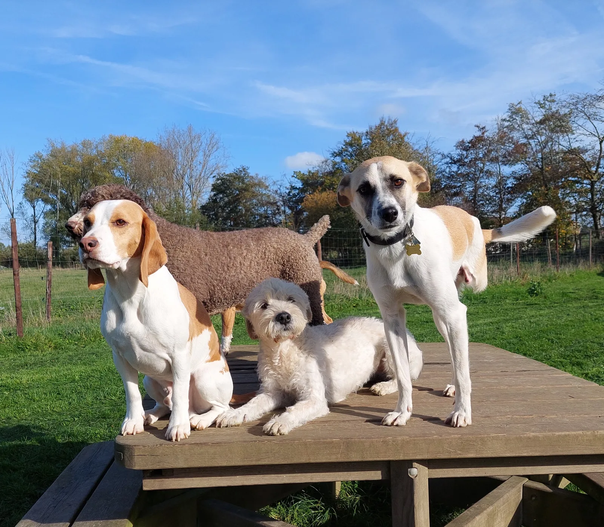
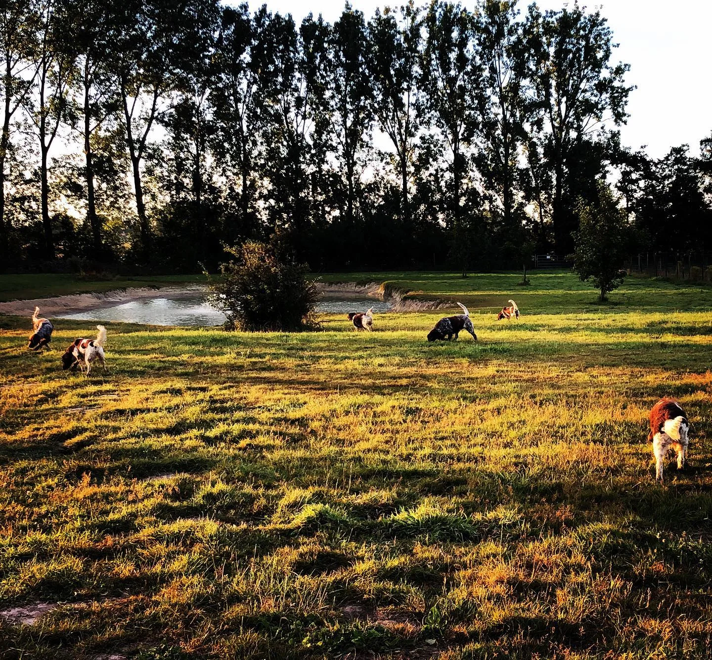

Weide 1
Vijverweide
Met de zwemvijver. Wie van water houdt, komt hier niet meer uit.

Pension, dagopvang en drie speelweides. Rennen in groep, plonzen in de vijver en 's avonds moe in de eigen kennel. Wil je hem proper terug? De selfdogwash staat klaar.

Het pension ligt bij ons aan huis en er logeren nooit meer dan 15 honden. Overdag spelen ze samen op de weide en wij staan er altijd bij. 's Avonds heeft elke hond zijn eigen plek om tot rust te komen.
Enkel sociale honden, zo blijft de groep veilig. Onze groep bestaat vooral uit kleine, middelgrote en rustige honden. Angstige honden zijn ook welkom: ze bloeien vaak open dankzij de groep. Grote honden zijn welkom, zolang ze rustig en respectvol omgaan met de kleintjes.
Niet toegelaten: niet-gecastreerde reuen ouder dan 9 maanden, dominante of opdringerige honden, grote energieke honden die nog onstuimig zijn, en deze rassen: American Bully, Akita, Argentijnse Dog, Boerboel, Bull Terriër, Cane Corso, Dobermann, Kaukasische Herder, Mastin, Mastiff, Pyrenese Berghond, Rottweiler, Turkse Herder, Stafford en jonge of energieke Herders (Mechelse, Duitse, Hollandse).
Huur een van onze drie afgesloten speelweides. Alleen met je eigen hond, of samen met honden die elkaar al kennen. Kom je met vrienden? Spreek gewoon af op dezelfde weide.
Met de zwemvijver. Wie van water houdt, komt hier niet meer uit.

Langs de bosrand, voor een rustig uur met honden die elkaar kennen.

De best verlichte van de drie, handig als het na het werk al donker is.
Dirty Dogz is van Eline en Niels. Eline werkt al haar hele leven met honden die het moeilijk hadden, Niels houdt de weides netjes en heeft altijd tijd voor een extra knuffel.
“Het liefste werk ik met angstige honden. Niets maakt mij gelukkiger dan hen bij ons te zien openbloeien.”Eline Ghekiere


We zagen direct dat jullie met veel liefde de hondjes opvangen en hun de tijd van hun Leven geven terwijl wij eventjes op vakantie waren. Voor haar was het eigenlijk ook wel vakantie. Wij komen zeker terug met Eloise.Amanda MeersmanPension

Onze goldens vinden dit hier super … ze ravotten en zijn dol op de plassen. We doen dit vaak met de honden naar een losloop gebied en deze hier staat in mijn favorieten.Henri Jr. BattestiSpeelweide
Superlocatie!!! Onze hond heeft zich rot geamusseerd. Hier komen we zeker terug!! Ook de mogenlijkheid om je hond degelijk te wassen + de automaten met alle benodigdheden. Zeker aan te raden!!Olivier VerzeeSpeelweide en selfdogwash

Goed qua prijs. Verschillende weides om uit te kiezen. De hondjes zijn er dol op. Super ook dat de doggywash er nu is. Het is er als het geregend heeft een grote modderpoel. Hou hier rekening mee en doe dus maar de botjes aan!Evy De WeirdSpeelweide
We staan bijna altijd tussen de honden, dus een mailtje lezen we sneller dan we de telefoon opnemen. Nog nooit bij ons geweest? Schrijf wat meer over je hond, dan plannen we een proefdag.

| Ma, wo, do en vr | 10u tot 12u en 16u30 tot 18u |
| Di, za, zo en feestdagen | 10u tot 12u |
| Brengen | 7u tot 8u30, of 10u tot 12u |
| Ophalen | 16u30 tot 18u |
In de schoolvakanties gaan de logés voor, dan is er zelden plaats voor een dagje.
De speciaalzaak is elke dag open van 10u tot 12u, ook in het weekend.
Geerbosstraat 1, 9090 Melle
Bellen kan van 10u tot 18u op 0498 66 80 80 (geen sms).
@dirtydogz.be op Instagram
Ik maakte deze demo voor jullie om te tonen wat er kan. Na een kort gesprek maak ik er iets veel persoonlijkers van, helemaal naar jullie wens.
Vrijblijvend. Ik kom langs of we bellen.
Op maat, op jullie eigen domein.
Geen voorschot. Jullie betalen pas als alles klaar is.
Hosting, domeinnaam en kleine wijzigingen, zoals nieuwe openingsuren.
Omdat een voorbeeld meer zegt dan een mail. Zo zien jullie meteen wat er kan, en het kost jullie niets.
Nee. Het gesprek is vrijblijvend. Vinden jullie het niks, dan is het daarmee gedaan.
Na ons gesprek staat jullie site binnen 10 tot 14 dagen online.
Zeker. Jullie domeinnaam kan gewoon blijven, de nieuwe site komt in de plaats van de oude.
Nee, dat doe ik op basis van ons gesprek. Eigen foto's zijn mooi meegenomen, maar niet nodig om te starten.